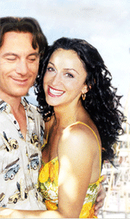

|  | ||
 |
| Interview with Dan Ireland |
|
Question: How did you get involved in the film? Answer: The writers, Jim Jermanok and Steve Jermanok had seen my film, THE WHOLE WIDE WORLD and brought me to the attention of the producer, David Bakalar. I flew to Boston to meet with them - and by the end of dinner I was hired. Like all directors, I was wondering if this could be real but by the time the plane landed back in Los Angeles, David had done a deal with my agent. Q: What attracted you to the material? A: More than anything it was the idea of people who were stuck in life, those who are left numb after a devastation happens in a relationship. The idea that love will happen again in their lives -- and the opportunity for second chances seems so remote if not impossible. Here was a woman who was in the prime of her life and yet she was stuck in her memories. I related to it on a personal level because my father had left my mother when I was very young. After a few years my brother and I started plotting to get her to go out on a date. But she was so shattered by being abandoned and left with four children to bring up that she never got over it. So, this story really struck a chord for me. Q: Had you ever been to New Bedford before? A: I had never even been to Boston! When we went to New Bedford it felt like an undiscovered little pocket of America that felt very European -- you go there and it's a different world right here in our own country. I thought that was fascinating because I've never really seen any place like it. I also felt it would be very beautiful on film. Q: What kind of tone were you trying to create in the film? A: I really wanted to make this feel like a foreign film in English, the kind of film where the most important thing going is family, friends, love, music and food. When I was a child I remember loving BLACK ORPHEUS. It's a movie that is so vibrant with color and music and the spirit of life. I wanted to capture that element in Passionada. Q: Were there any other films you had in mind? A: Yes, TWO FOR THE ROAD, is my all time favorite romantic movie. It was a huge inspiration. It's a movie about the good, the bad and the ugly of marriage. As a young teenager that movie defined romance to me more than anything else that was happening to me at that time. That film was probably my first love. I wanted to give PASSIONADA a bit of what that film gave to me. Q: Is that festival scene with the singing and dancing a real festival? A: We recreated the Festival of the Blessed Sacrament in June; it actually takes place in August. It draws about 300,000 people. That day when we started shooting, we started out with 25 people, so we got on the local radio and within two hours we had 500 people. We created the rest. Q: How did the town respond to you coming in? A: We had great support from the entire community and the mayor. Many of them are in the background as extras. I wanted that authenticity and didn't think extras from Boston would really cut it. There's nothing to compare with the real flavor of the Portuguese community. Q: How did you find Sofia Milos to play your leading lady? A: I needed someone who was haunting, heart-breaking, vulnerable, intoxicating and hurt. But most importantly, she needed to blossom into this beautiful passion flower by the film's end. We went through 60 actors -- Sofia was the last one to come in. She walked into the room and took our breath away. I said a silent prayer to the casting gods begging them to make her as good as she looked. She was better that I what I was praying for. Q: Was it hard for her to play the part of a fado singer? A: We went to every fado club in the area, and believe me, there's a lot. She had to understand the nuance of fado, the meaning of it. She learned everything in three weeks. I was utterly blown away by her comprehension of who she was playing and the passion and hard work she put into it. She didn't know a word of Portuguese before we started and three weeks later, she knew what every lyric to every song meant. It's a majestic performance. Q: Were you a fan of fado music? A: I had never heard it before. David Bakalar gave me a CD by Misia and I listened to it on the plane on the way home -- over and over again. I was spellbound; that completely crystallized the story for me. I discovered the character of Celia from the music. Fado is about tragedy, about sorrow and being caught up in the past. It's so much a part of who Celia is. I was hooked. Q: Were the music scenes with Celia singing in the club difficult to shoot? A: Well, considering we shot from ten pm till 7 in the morning, and that we didn't have the master tapes from Misia and had to work from a CD --they were tough to get right, but it was completely exhilarating. As usual, I storyboarded everything but once you start working with the actors, your storyboards get thrown away and you capture what is the most real. Fortunately, we created a restaurant in an abandoned building so I was able to get a crane and my stedicam in there. I needed to keep the camera moving around to capture every nuance, every emotion. To have the space to do it in was a blessing. Q: Sofia, Lupe and Emmy, the three generations of women, really seem like a family, how did you get that feeling? A: It's good casting but most importantly, its good actors, and them allowing me to push them on that notion all the time. There's a wonderful undercurrent between Celia and Vicky, an edge that usually happens between a mother and a daughter -- love with an edge. I learned that from watching my sister and my mother. I owe it to them. Q: How did you know Emmy Rossum was right for the role? A: She walked in the casting office and she was Vicky. We'd been through 25 other girls -- not one of them came within a mile of what Emmy did in her audition. We were left breathless. It was very much the same experience I had as when Renee Zellweger came in to audition for me for my first film, THE WHOLE WIDE WORLD. The casting Gods have always been good to me. Emmy is on her way to a very brilliant career. Q: Did you know how old she was? A: No way. She never would have got the job if I did. There are too many shooting restrictions about using a minor in Mass. and I didn't have the luxury of a studio shoot. I thought she was 17. When I found out she was 14 years old my Assistant Director informed me we could only shoot 3 hours a day with her by state law. Fortunately for us the state granted us a waiver. By that point I was willing to do anything it took to make sure we could use Emmy. David felt the same. That's what mattered. Q: Even though Jason Isaacs plays Charlie Beck, a gambler and a liar here, he still has a lot of charm. A: It's a total Cary Grant role and I needed an actor who is the closest thing to Cary Grant working today. Jason was it -- he's a spectacular actor -- sexy, dangerous, romantic, impossible not to like and great fun to be around. He's the kind of actor that makes everything seem so effortless and yet he worked his ass off to make his character appealing. In a way Sofia is like a cross between Anna Magnani and Sophia Loren. I always thought if I could cast this movie back in the 50s I would have picked Cary Grant and Sophia Loren. I always had them in my head. Not anymore. Q: What is the attraction between Celia and Beck? A: Although they are completely different people, they're both at the same spots in their life. That was the thing I liked most about the script. Charlie is someone who is at the end of his road, professionally and personally -- he is desperate for a little inspiration. Celia is living in the past, caught up in memories and expressing them through her music. When Charlie meets Celia he is instantly intoxicated by her. Although she doesn't show it to him, we see something amuses her about him. Even though she ultimately blows him off, he strikes a silent chord with her. It's her secret and before she lets him in on it, he has to earn it. And of course there's Vicky... sometimes passion needs a little persuasion, and that's where our story begins. |